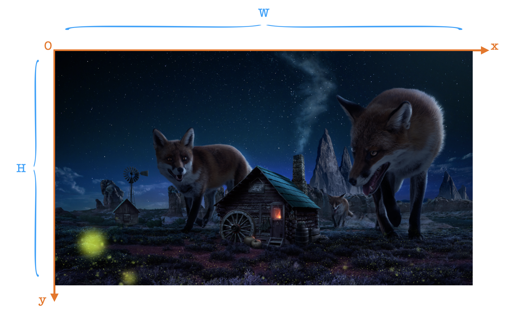
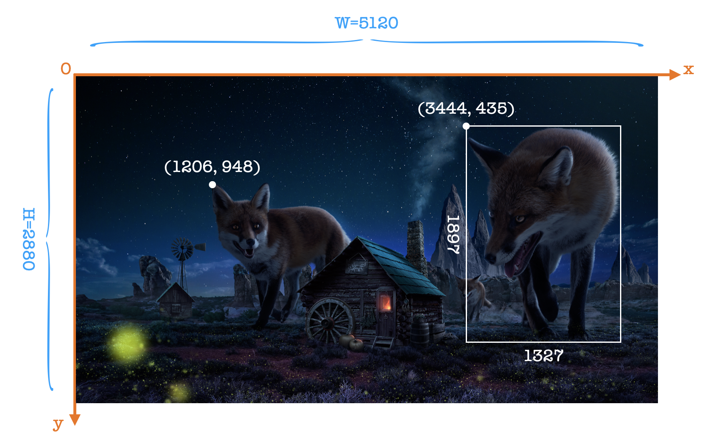
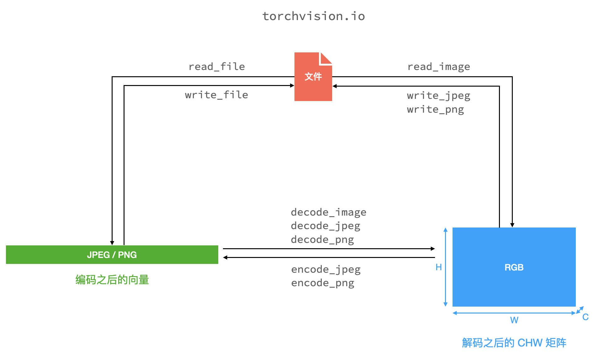

什么是图像
像素坐标
一张图片是一个高 \(H\)、宽 \(W\) 的像素矩阵，其大小简称作 \(W\times H\)。
在图片上建立坐标系，是以左上角为原点，\(x\) 轴正半轴向右延伸、\(y\) 轴正半轴向下延伸，如图所示：

图像上一个像素点的坐标就是指某像素点在上述坐标系中的坐标，如下图所示，图片大小 \(5120\times 2880\)，狐狸耳朵尖的坐标是 \((1206,948)\)。
在目标检测任务中，经常与检测框打交道。检测框一般有两种表示方式：\((x_\min,y_\min,x_\max,y_\max)\) 和 \((x_\min,y_\min,w,h)\)，均是相对上述坐标系而言的，例如下图中，检测框的两种表示方式分别是 \((3444,435,4771,2332)\) 和 \((3444,435,1327,1897)\)。

图像的加载
概述
众所周知，一张图片就是一个像素矩阵，且对于 RGB 格式而言，每个像素点都有 3 个值：R、G、B，它们的取值范围都是 \([0,255]\)，分别可以用 1 个字节存储。因而，一个高 \(H\) 宽 \(W\) 通道数 \(C\) 的图片，就需要 \(C\times H\times W\) 个字节表示出来。这个 \(CHW\) 矩阵通常就是我们神经网络的输入。
但是在磁盘上，一张图片的存在形式并不一定是这个 \(CHW\) 矩阵，而是被编码（encode）成了各种格式，例如 jpeg、png、bmp 等等。jpeg 和 png 都是会压缩图片的，所以它们实际占的存储空间会比 \(C\times H\times W\) 小。从被编码的格式恢复到 \(CHW\) 矩阵的过程称作解码（decode）。
举个例子，这张图是图像处理领域最经典的图了：

查看图片信息，可以看到它的尺寸是 \(200\times 200\)，色彩空间是 \(\text{RGB}\)，那么它解码之后应占用 \(200\times200\times3=120\text{KB}\) 的空间，但它在磁盘上只占用了 \(11\text{KB}\)；类似地，这张图片的 png 格式占用磁盘空间为 \(91\text{KB}\)。
torchvision.io
torchvision.io（文档）提供了许多图片加载和存储的函数，它们的作用就是让我们能够对图像编码、解码以及对图像文件读写。我画了一个图直观理解：

注意到文档里 decode_jpeg 有一个与众不同的参数：
device (str or torch.device) – The device on which the decoded image will be stored. If a cuda device is specified, the image will be decoded with nvjpeg. This is only supported for CUDA version >= 10.1
nvjpeg 是 nvidia 的 gpu 上加速 jpeg 图像解码、编码和转码的库。所以我们在写 DataSet 时用这个库，可能会加快数据的读取，因而加快训练。
实验
用几个常用的库：cv2、matplotlib.pylot、PIL、skimage 和 torchvision.io，读取图像文件为矩阵形式。
1 | |
本地（cpu）运行结果如下：
1 | |
可以看到，plt、PIL 和 skimage 落后 cv2 和 torchvision 很多，而后两者之间 cv2 略胜一筹。我反复运行了多次均是类似的结果。
有趣的是，这段代码在服务器上的运行结果是：
1 | |
torchvision 完胜其他方式。